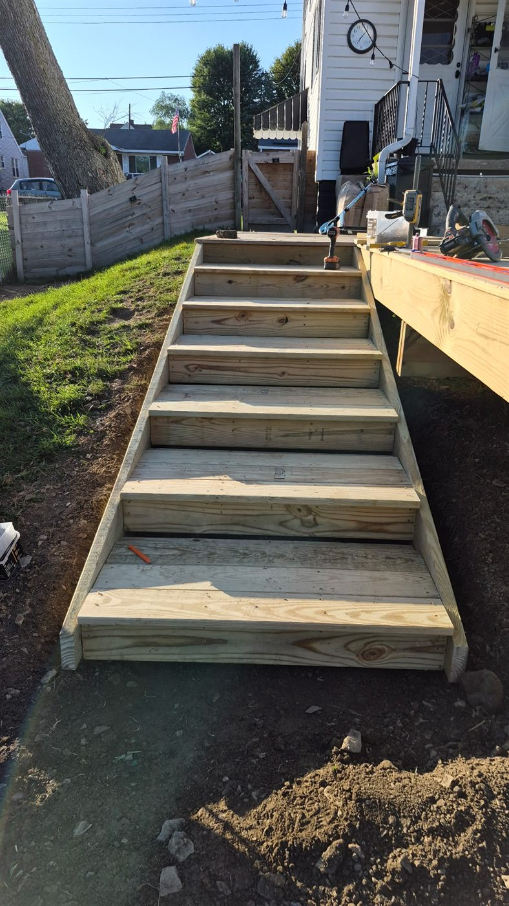

Porch Step & Exterior Stair Repair in Moon Township, PA
Wood step replacement, composite stair treads, box steps, or a small landing that's come loose — Handled Home repairs porch steps and exterior stairs for homeowners. Serving Moon Township, Coraopolis, Robinson, and Sewickley, plus Beaver County and surrounding Greater Pittsburgh communities.
On desktop? Text photos directly to 412-353-5341.
From a single loose tread to a full set of box steps, we repair and rebuild the steps and stairs that lead up to your porch, deck, or entry.
Replace rotted, cracked, or worn wood stair treads and stringers.
Ask About Wood Step Replacement →Swap in composite stair treads that hold up to weather without the upkeep of wood.
Ask About Composite Stair Treads →Repair or rebuild box steps, including the framing underneath when it's showing rot or damage.
Ask About Box Step Repair →Fix steps that shift, wobble, or sit uneven so they're safe and solid to use again.
Ask About Loose & Uneven Step Repair →Repair small landings at the top or bottom of a stair run, including framing and surface boards.
Ask About Small Landing Repair →Add or replace a stair handrail alongside your step repair. See our full Railing Installation & Repair service for material options.
Ask About Stair Railings →Repair the porch edge and fascia board where the top of the stairs meets the porch.
Ask About Porch Edge & Fascia Repair →Porch step and exterior stair repair in Moon Township, Coraopolis, Sewickley, Robinson, Crescent Township, Findlay Township, and nearby Pittsburgh-area communities.
Individual steps in most cases. We repair the specific tread, stringer, or box step that's failing rather than replacing the whole run unless the damage is widespread.
Yes, we install composite treads on existing stringers as well as replacing wood treads with composite material.
Yes, this is one of our most common step repair calls, usually caused by a shifted stringer or settled footing underneath.
Yes, we can add or replace a stair handrail alongside a step repair. See our Railing Installation & Repair service for vinyl, aluminum, and other material options.
This page is focused specifically on steps and stairs. Our Porch Repair and Deck Repair & Building services cover the rest of the structure — floor, railing, posts, and framing.
Need work on the rest of the porch or deck too? See our Porch Repair or Deck Repair & Building services.
A new set of pressure-treated stairs built off a deck in Aliquippa — cut stringers, full-width treads, and a wide bottom step.

Steps take more abuse than almost any other part of a porch or deck — every trip in and out of the house lands directly on them, and they're fully exposed to rain, snow, and the freeze-thaw cycles that are hard on wood in the Pittsburgh area. A step that feels the least bit uneven or springy underfoot is worth fixing quickly, since it's one of the more common sources of a fall around the house.
Box steps and small landings are frequent repair calls in Moon Township, especially on older homes where the original framing underneath has started to give. Composite treads have become a popular upgrade for homeowners who want to stop replacing wood treads every few years.
If you have porch steps or exterior stairs that need attention, reach out to Handled Home. We're based locally in Moon Township and work throughout the Pittsburgh area. Call or text 412-353-5341, or fill out the estimate form below.
Step repairs are usually part of a larger porch or deck job.
Fill out the form below and we'll get back to you quickly. Or call/text us directly at 412-353-5341.